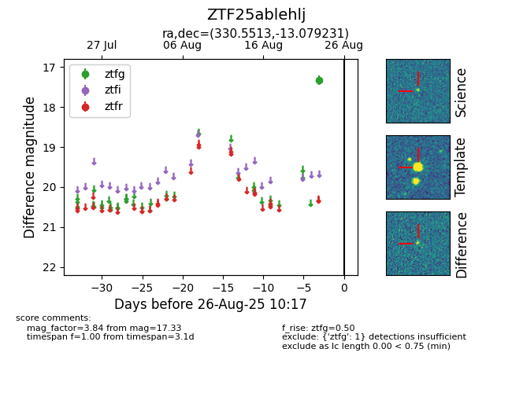

Target ZTF25ablehlj at 2025-08-26 10:17, see:
FINK: fink-portal.org/ZTF25ablehlj
Lasair: lasair-ztf.lsst.ac.uk/objects/ZTF25ablehlj
ALeRCE: alerce.online/object/ZTF25ablehlj
alt names
ZTF25ablehlj (ztf,fink)
coordinates:
equatorial (ra, dec) = (330.5513,-13.07923)
galactic (l, b) = (43.8998,-48.09826)
photometry
last ztfg=17.33
1 ztfg detections
